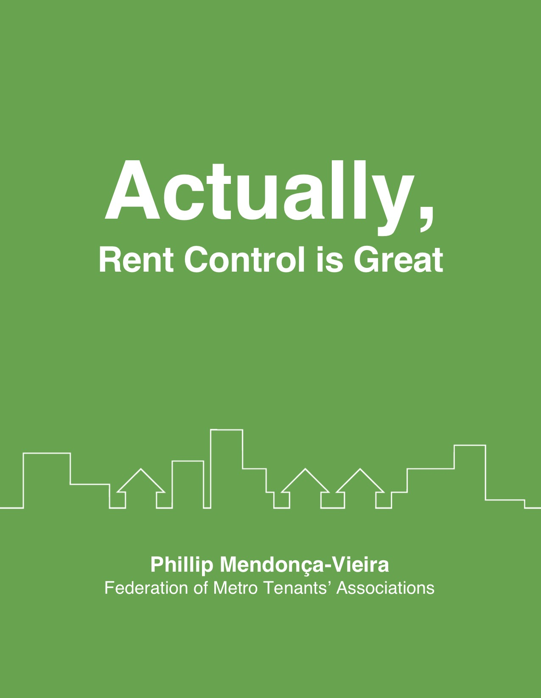

Actually, Rent Control is Great: Revisiting Ontario’s Experience, the Supply of Housing, and Security of Tenure
September 26, 2018

Click here to read the report (pdf).
In the fall of 2017, I took a sabbatical. I was burned out from working on my startup, and to keep myself busy I settled on a writing project.
The government of Ontario had recently extended rent control regulations to cover more units, and lots of column writers and bank economists and real estate trade associations thought this was bad. Having been a tenant for many years, I felt that in fact, rent control is good.
I would write them a letter, and get it published as an editorial. Under a thousand words, improve my writing skills. Should just take me a week.
A few months later, I’d read a couple dozen academic papers, and think tank reports and the odd dissertation. I’d written a small masters’ thesis, and published a summary as an op-ed in the Toronto Star.
I was then approached by the Federation of Metro Tenants’ Associations, a non-profit tenant rights advocacy group in Toronto. They quite liked my report, and felt that it complemented their work. What if they were to publish my report? And so, during the spring and summer of 2018, I typeset my paper into LaTeX and the FMTA helped me edit it.
Here we are! Thanks for reading.